OI Wiki · prijevod · Strukture podatakaOI Wiki · translation · Data structures
StogStack
Sadržaj
Uvod

Stog (stack) je linearna struktura podataka koja se često koristi u natjecateljskom programiranju. Ovaj članak govori o strukturi podataka stog, a ne o sistemskom stogu ili prostoru stoga pri izvođenju programa.
Izmjene stoga i pristup njegovim elementima slijede načelo „zadnji ušao, prvi izašao”, pa se stog često zove LIFO lista (last in, first out).
Upozorenje
LIFO znači da se među elementima trenutačno u spremniku prvo uklanja onaj koji je posljednji umetnut.
Promotrimo stog sa sljedećim operacijama:
push(1)
pop(1)
push(2)
pop(2)
Gledano u cjelini, 1 prvi ulazi i prvi izlazi, dok 2 posljednji ulazi i posljednji izlazi. Tako bismo dobili FIFO listu, što je očito pogrešno.
Zato pri određivanju je li struktura LIFO ili FIFO treba promatrati elemente koji se trenutačno nalaze u spremniku.
Implementacija stoga poljem
Poljem možemo jednostavno simulirati stog, kao u nastavku:
Implementacija
int st[N];
// Ovdje st[0] (odnosno *st) čuva broj elemenata i indeks vrha stoga
// Dodavanje na stog:
st[++*st] = var1;
// Pristup vrhu stoga:
int u = st[*st];
// Uklanjanje: pazi na granice; ne uklanjaj kad je *st == 0
if (*st) --*st;
// Isprazni stog
*st = 0;
st = [0] * N
# Ovdje st[0] čuva broj elemenata i indeks vrha stoga
# Dodavanje na stog:
st[st[0] + 1] = var1
st[0] = st[0] + 1
# Pristup vrhu stoga:
u = st[st[0]]
# Uklanjanje: pazi na granice; ne uklanjaj kad je *st == 0
if st[0]:
st[0] = st[0] - 1
# Isprazni stog
st[0] = 0
Stogovi u C++ STL-u
C++ STL nudi spremnik std::stack. Prije korištenja treba uključiti zaglavlje stack.
Definicija spremnika stack u STL-u
// clang-format off
template<
class T,
class Container = std::deque<T>
> class stack;
T je tip podataka pohranjenih u stogu.
Container je tip temeljnog spremnika za pohranu elemenata. Mora pružati sljedeće funkcije s njihovim uobičajenim značenjem:
back()push_back()pop_back()
STL spremnici std::vector, std::deque i std::list zadovoljavaju te zahtjeve. Ako nije drukčije navedeno, zadani temeljni spremnik jest std::deque.
Spremnik stack u STL-u pruža niz članskih funkcija. Često se koriste:
- Pristup elementima
st.top()vraća element na vrhu stoga
- Izmjene
st.push()umeće predani argument na vrh stogast.pop()uklanja element s vrha stoga
- Kapacitet
st.empty()vraća je li stog prazanst.size()vraća broj elemenata
Spremnik std::stack pruža i nekoliko operatora. Često se koristi operator pridruživanja =, kao u ovom primjeru:
// Stvori dva stoga, st1 i st2
std::stack<int> st1, st2;
// Dodaj 1 na st1
st1.push(1);
// Pridruži st1 stogu st2
st2 = st1;
// Ispiši element na vrhu stoga st2
cout << st2.top() << endl;
// Ispis: 1
Implementacija stoga Pythonovom listom
U Pythonu možete simulirati stog pomoću liste:
Implementacija
st = [5, 1, 4]
# Dodaj elemente na vrh pomoću append()
st.append(2)
st.append(3)
# >>> st
# [5, 1, 4, 2, 3]
# Ukloni element s vrha pomoću pop
st.pop()
# >>> st
# [5, 1, 4, 2]
# Isprazni stog pomoću clear
st.clear()
Literatura
Contents
Introduction
A stack is a linear data structure commonly used in competitive programming. This article discusses the stack data structure, not the system stack or stack space used during program execution.
Stack modification and access follow the last-in, first-out principle, so a stack is often called a last-in, first-out (LIFO) list.
Warning
LIFO means that, among the elements currently in the container, the most recently inserted one is removed first.
Consider a stack with these operations:
push(1)
pop(1)
push(2)
pop(2)
Viewed as a whole, 1 enters first and leaves first, while 2 enters last and leaves last. This would make it a FIFO list, which is clearly incorrect.
Therefore, when deciding whether a data structure is LIFO or FIFO, consider the elements currently in the container.
Implementing a stack with an array
An array can conveniently simulate a stack, as follows:
Implementation
int st[N];
// Here st[0] (that is, *st) stores the element count and the top index
// Push:
st[++*st] = var1;
// Access the top:
int u = st[*st];
// Pop: check bounds; do not pop when *st == 0
if (*st) --*st;
// Clear the stack
*st = 0;
st = [0] * N
# Here st[0] stores the element count and the top index
# Push:
st[st[0] + 1] = var1
st[0] = st[0] + 1
# Access the top:
u = st[st[0]]
# Pop: check bounds; do not pop when *st == 0
if st[0]:
st[0] = st[0] - 1
# Clear the stack
st[0] = 0
Stacks in the C++ STL
The C++ STL provides the container std::stack. Include the stack header before using it.
Definition of stack in the STL
// clang-format off
template<
class T,
class Container = std::deque<T>
> class stack;
T is the type of data stored in the stack.
Container is the type of the underlying container used to store elements. It must provide the following functions with their usual semantics:
back()push_back()pop_back()
The STL containers std::vector, std::deque, and std::list satisfy these requirements. If not specified, the underlying container defaults to std::deque.
The STL stack container provides several member functions. Commonly used ones include:
- Element access
st.top()returns the top element
- Modifiers
st.push()inserts its argument at the topst.pop()removes the top element
- Capacity
st.empty()returns whether the stack is emptyst.size()returns the number of elements
The container std::stack also provides several operators. One commonly used operator is assignment =, as in this example:
// Create two stacks, st1 and st2
std::stack<int> st1, st2;
// Push 1 onto st1
st1.push(1);
// Assign st1 to st2
st2 = st1;
// Print the top element of st2
cout << st2.top() << endl;
// Output: 1
Implementing a stack with a Python list
In Python, you can simulate a stack using a list:
Implementation
st = [5, 1, 4]
# Use append() to add elements to the top
st.append(2)
st.append(3)
# >>> st
# [5, 1, 4, 2, 3]
# Use pop to remove the top element
st.pop()
# >>> st
# [5, 1, 4, 2]
# Use clear to empty the stack
st.clear()